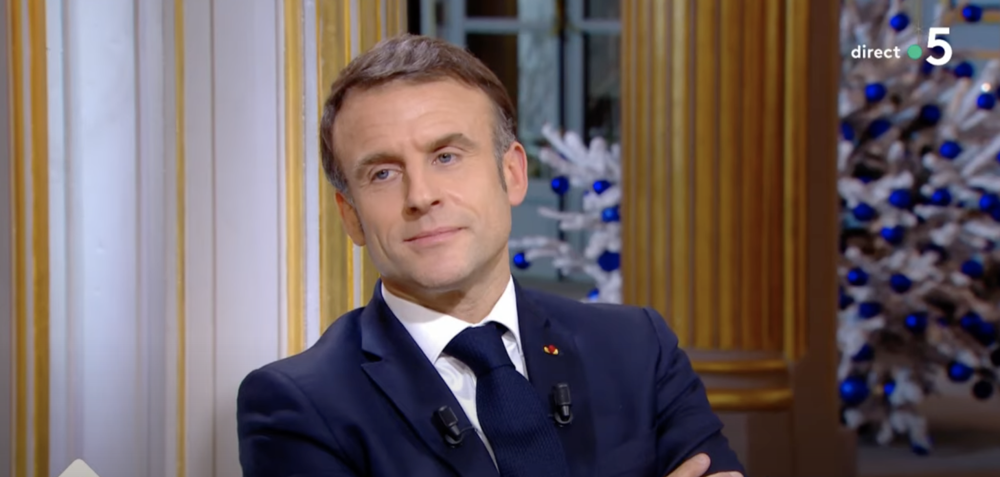

FRANCE - Pourquoi la petite phrase de Macron sur « ces connards de Français » fait polémique
Controverse Présidentielle : Un Tollé National
Il a suffi d’une seule phrase pour enflammer l’opinion, celle, à peine audible, du chef de l’État à un conseiller juste avant d’enregistrer l’émission C à Vous : « Allez, c’est le moment d’aller parler à ces connards de Français ». Il n’en fallait pas plus pour provoquer un tollé : relayée d’innombrables fois sur les réseaux sociaux, la vidéo a immédiatement fait polémique et alimenté les thèses les plus complotistes, certains allant jusqu’à affirmer que le président se préoccupe peu des citoyens. Pour Alain Duhamel, « tout est désormais prétexte au déferlement de la haine anti-Macron, même la réflexion la plus anodine. » Brice Couturier ajoute : « Son intelligence en agace plus d’un, cette polémique n’est que le reflet de la jalousie des Français. »
Pour Agnès Palombier, enseignante en sociologie à l’université de Rennes, le goût pour la polémique est « une conséquence de l’addiction aux réseaux sociaux et de la dépendance à la dopamine. » Elle ajoute : « Le président aurait pu dire n’importe quoi d’autre, les réactions auraient été exactement les mêmes. » Interloqué par l’ampleur de la polémique, Emmanuel Macron a déploré sur Twitter qu’on ne puisse « plus rien dire », ajoutant cette requête : « Arrêtons une fois pour toutes de diviser ces feignasses de Gaulois réfractaires qui ne sont rien ! ».